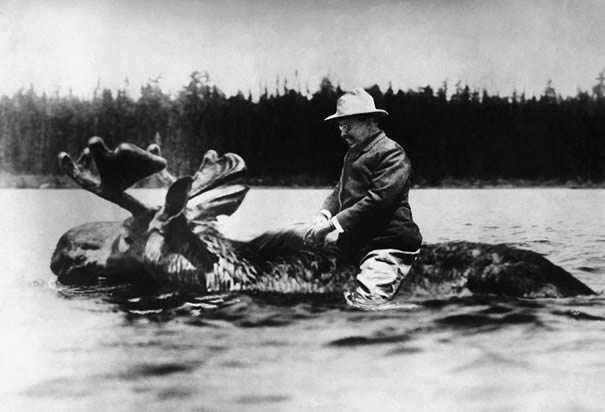
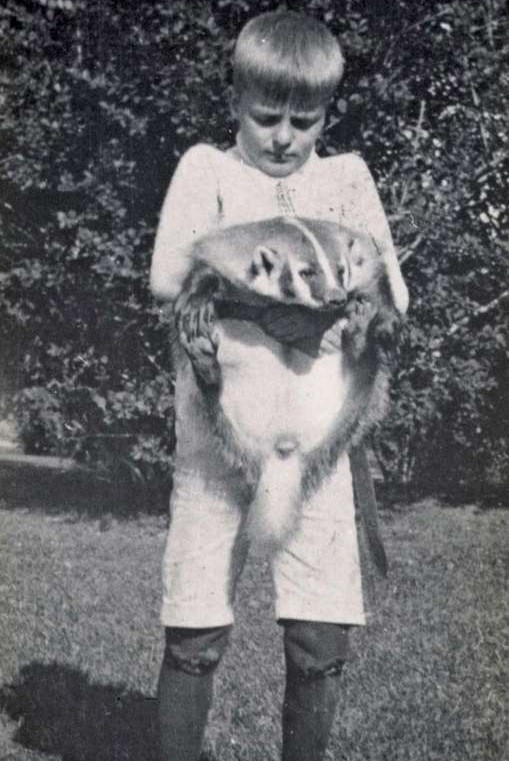
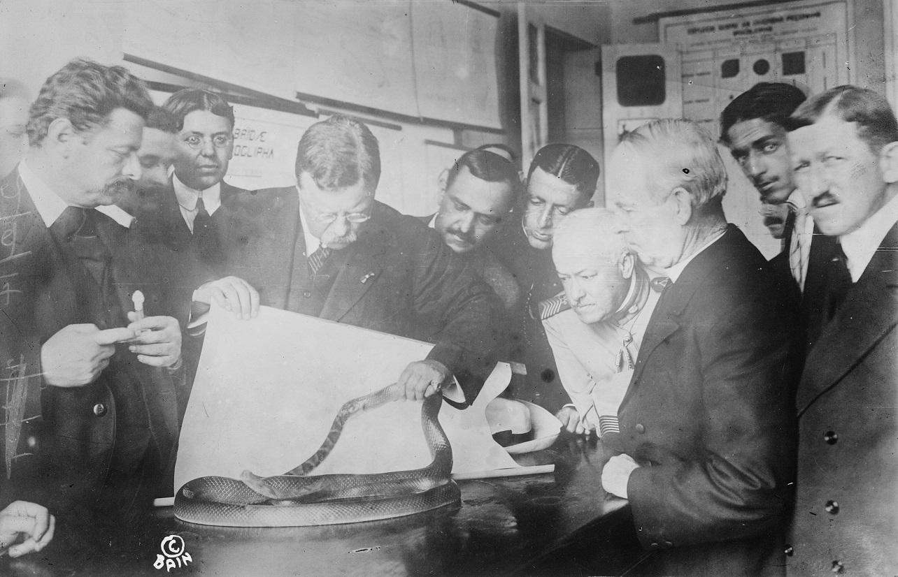
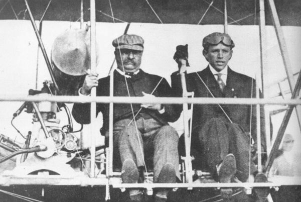
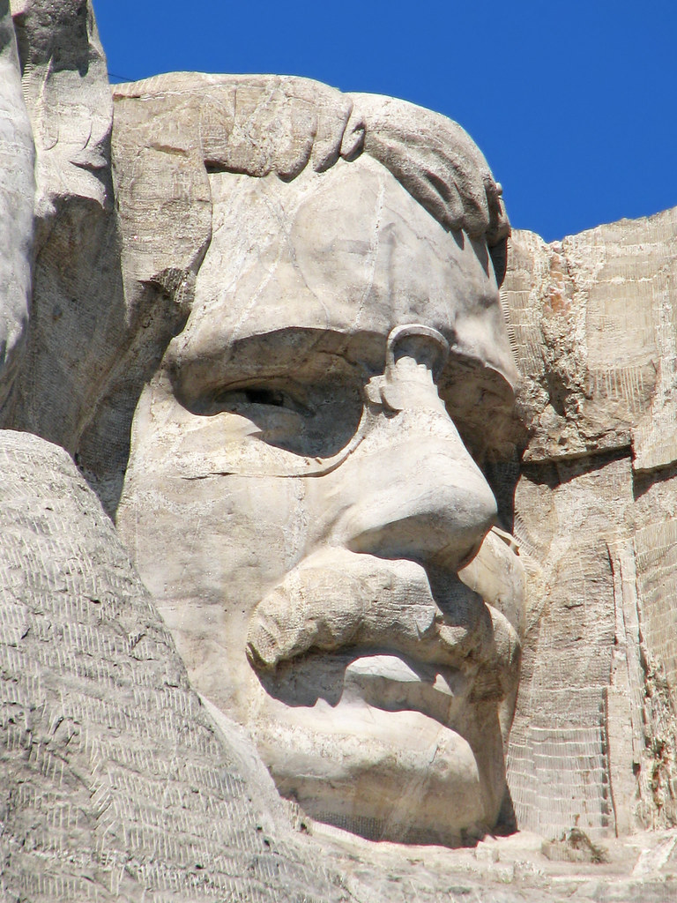

Fun Facts about Roosevelt
- Roosevelt got his nickname "Teddy" from a hunting trip where he refused to shoot a bear tied to a tree. Toy companies began making cute bear toys naming them "Teddy Bears".
- He personally hated being called "Teddy" and prefered to be called "Colonel"
- He read at least one book a day, in multiple languages.
- He wrote 47 books and over 150,000 letters in his lifetime.
- He saved the sport of Football by making it safer as it was too dangerous before.
- He and his family owned over 30 pets in the White House including ponies, badgers, hyenas, lizards, bears, macaws, snakes, four guinea pigs and a one-legged chicken.
- He regularly held boxing matches in the White House, one opponent hit him so hard he went blind in his left eye. He switched to Judo and Jiu-Jitsu and earned a brown belt.
- Due to the previous president's assassination, he carried a pistol while president.
- He was disappointed with his presidential portrait and burned it before leaving office.
- He often went skinny-dipping in the Potomac River during winter as president.
- He consumed insane amounts of coffee and his cup was described as a bathtub.
- His third-party run for president in 1912 is still the most successful third-party campaign in U.S history.
- He was the first president to campaign in a car, ride in a submarine and an airplane.
- He was the first president to leave the country while in office.
- He was the first to campaign vigorously during elections. Before, most candidates made few visits and speeches.
- He is the only person to receive the Nobel Peace Prize and the Medal of Honor.
- Theodore Roosevelt and Franklin D. Roosevelt were fifth cousins. Eleanor Roosevelt was Theodore's niece.
- He was known for his famous catchphrase, "Bully!"
- His face is featured on Mount Rushmore
- He is an American icon



Sources
Email Me